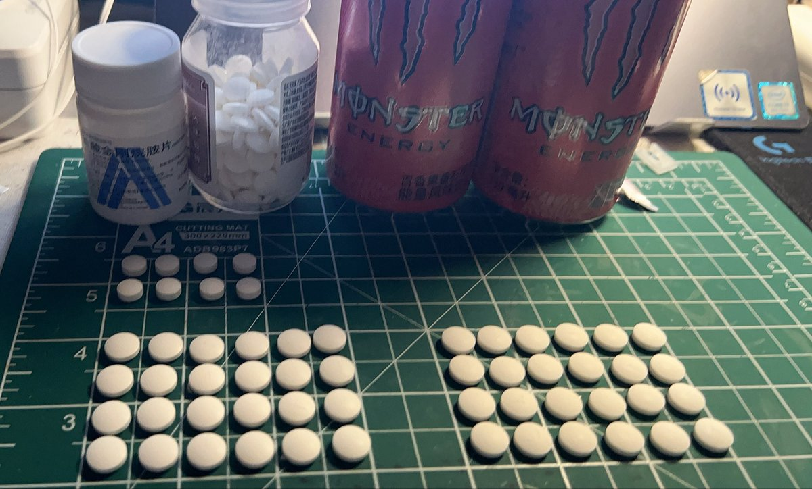
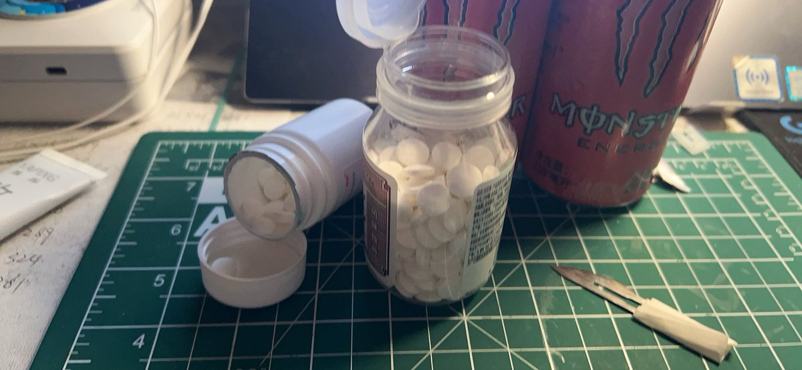

圣三一第一步枪🍥
@gdioiui
@MiaoYan_X www


MiaoYan
@MiaoYan_X
我闲的吧？ 弄成这样…今天o了24t玉米（本来打算o48t的 但是太难吃啦！）和6t晚安（第一次 不敢o太多）
至于为什么od…喵的！我买盐被我爸签收了 祂还找晶哥了！
（我不就是想收藏一下盐嘛…又不吃……）
所以我昨天被晶哥“教育”了qwq 还是来了两次！连着！ 呜呜呜
(>﹏<)(>﹏<)(╥﹏╥)
药效还没上来 https://t.co/WHywxS2HLo